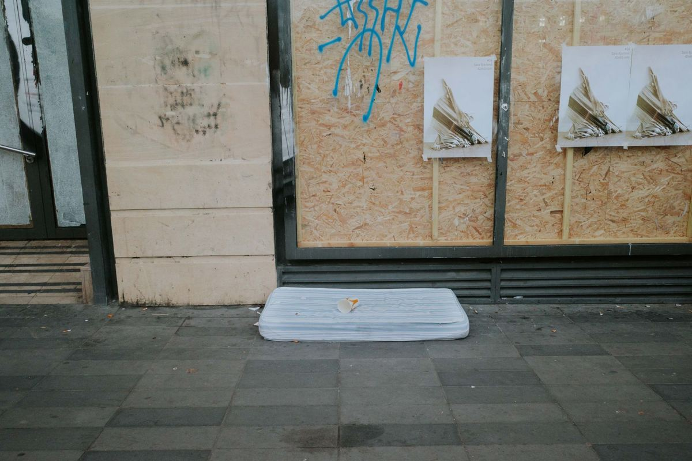

There are four legal ways to get rid of a mattress in the northern DFW suburbs. Your city's bulk trash program, a drop off you drive yourself, a recycler that takes the mattress apart, or a crew that carries it out of the bedroom for you. Donation is almost never one of them. Here is how each option actually works.

A mattress is the item people put off the longest. It is awkward, it does not fold, it will not fit in a car, and it is the one thing a regular trash cart has no answer for. So it goes to the garage, then it stays in the garage.
Why a mattress is harder to get rid of than a couch
A sofa can be broken down. A mattress mostly cannot, at least not with a box cutter and a Saturday. Inside a modern mattress are steel coils, polyurethane foam, glue, and fabric, all bonded together on purpose so the thing holds its shape for a decade. Every one of those materials has a different disposal path, and separating them is a job for machinery, not a homeowner.
Then there is the box spring, which is usually still sitting under it. And the frame. And in a lot of houses, a second set from the guest room. What starts as one item is normally three.
Mattresses are also the item cities are strictest about, because they jam compactor trucks and because they take up a large amount of landfill space for very little weight.
Will the city take a mattress at the curb?
Sometimes, on their schedule, in limited numbers. Every city around here runs a version of a bulk or bulky waste program, and every version has caps. When a pickup gets passed over anyway, we covered what to do with bulky trash the city skipped.
Frisco is a clear example. Its bulk trash pickup is once a month, capped at five items, and you have to reserve a spot on the list before noon the business day before your collection day. Items go at the curb or the alley where your carts are serviced, and crews will not come onto private property to get them.
Plano publishes its own list of what does and does not qualify on the bulky waste accepted items page, and it is worth reading before you drag anything out. McKinney runs its programs through residential trash services with its own rules and its own request window.
So the city route is real and it is free, and we would rather say that out loud than pretend otherwise. It works well if you have one mattress, a month to wait, a curb the truck can reach, and no HOA that objects to a mattress sitting out front for a few days. If any of those are missing, it stops working.
Read your city's accepted-items list before you move anything. A mattress that gets rejected at the curb is worse than a mattress in the garage, because now it is outside, it is going to rain, and you still own it. Plano's programs and where they stop working are laid out on our Plano junk removal page.
Can you donate a used mattress?
Almost never, and we would rather tell you that before you load it into a truck and drive across town.
Used mattresses are one of the most commonly refused donation items, because a charity has no way to inspect or sanitize bedding before it goes to the next family. The Salvation Army's donation program publishes what it will accept, and it is worth reading their current list rather than assuming. Habitat for Humanity ReStores focus on furniture, appliances, cabinets, and building materials, and each store sets its own accepted list locally.
The realistic exception is a mattress still in plastic or genuinely close to new. If yours is that, call ahead first. If it has been slept on for eight years, no charity in North Texas wants it, and asking them to take it just moves your disposal problem onto a nonprofit.
Is there anywhere in Texas that recycles mattresses?
Not through a statewide program. The Mattress Recycling Council runs the recycling programs that exist in California, Connecticut, Oregon, and Rhode Island. Texas is not one of them, so there is no state-funded drop off here the way there is out west.
What Texas does have is a scattered set of private recyclers and transfer stations, plus the general recycling guidance the state keeps at TCEQ. Availability changes, hours are limited, and most of them want you to arrive with the mattress already in a truck, which is the part most people cannot do.
What happens when we take a mattress
We come to the bedroom, not to the curb. That is the entire difference.
A crew shows up, looks at what you have, and gives you a firm number before anything is lifted. You approve it, then the mattress, the box spring, the frame, and the guest room set all leave in the same visit. Disposal is handled on our end, so there is nothing left for you to schedule and nothing sitting outside waiting on a truck.
Our crews are our own people rather than gig labor hired off an app that morning, which is why we are comfortable sending them upstairs and through a hallway in someone's home. We keep our pricing fair and tied to the work, and there is never a charge for asking. If you want the free options first, we will point you at them.
Where the load goes after that is covered on what we will and will not take, and the short version is that anything usable gets diverted and the rest is disposed of properly.
Getting it out of the house is the actual job
People underestimate this part. The mattress is not heavy so much as unmanageable, and the places it has to travel through are narrow.
Stairs and turns. A queen going down a switchback staircase needs two people who have done it before, and a wall that nobody wants to patch afterward.
Apartments. Elevators, loading rules, and a long walk to the truck. Apartment junk removal covers how those pickups run and what a building will usually want arranged first.
Storage units. A mattress left in a unit has usually been there a while and is not coming out clean. Storage unit junk removal covers access and timing on those.
Full bedroom sets. If the dresser and headboard are going too, furniture removal is the right page. It is one visit either way.
We run pickups seven days a week. Call before noon and same afternoon is typical across Plano, Allen, Frisco, McKinney, Richardson, Little Elm, Prosper, The Colony, Wylie, and Fairview. After noon, the next morning's first slot is the usual worst case. Typical, not guaranteed, because access and job size are real variables. We haul away an old mattress in Allen and get a bad mattress out of the house in Frisco on that same schedule. If the timing is tight, same day junk removal is the page to read.
Frequently asked questions
Will you take just one mattress?
Yes. Single items are a normal call and we would rather do a small job well than turn it down. Tell us what it is and where it sits and we will give you a number before we start.
Do I have to get it out of the bedroom first?
No. Leave it where it is. Carrying it out is the part you are hiring us for, and moving it yourself ahead of time usually just puts it somewhere more awkward.
Do you take box springs and bed frames too?
Yes, along with headboards, footboards, and slats. It is all one pickup rather than a separate trip for each piece.
What if the mattress has bed bugs?
Tell us before we come out. We will talk through how to bag and seal it so nothing spreads on the way out of the house, and we will be straight with you about whether we are the right call.
Can I just put it in the alley?
Only if your city's program accepts mattresses and you are inside its item limit and request window. Check your city's accepted-items list first, because a rejected pile stays yours.
If you have a mattress that has been leaning against the garage wall since spring, send us a photo and the address and we will tell you what the job looks like before you commit to anything. Ask us for a free quote. There is no rush on our end.